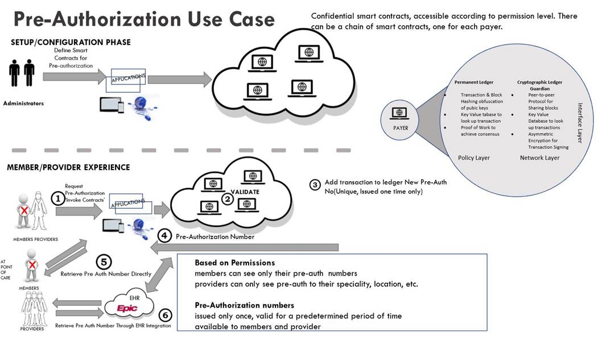

|
Blockchain has been a ‘buzzword’ for the past few years. Blockchain in healthcare holds promise, but is it a viable solution? Blockchain is best used when two parties, individuals or entities need to complete a transaction that can be validated on the network. At this time the transactions are fairly slow, so if speed is a deciding factor a decentralized blockchain solution would be inefficient. The transactions need to be fairly simply and repeatable. I was part of a team that developed a decentralized solution to store patient medical data in a centralized database and allow them to sell their data to researchers or provide their records to other medical professionals. While it was an interesting learning experience, we felt DLT (Distributed Ledger Technology) was not an appropriate solution. A big factor was the fact that customization, medical records and tests are very complicated and need to be called via smart contracts on the blockchain with a high level of customization for each patient (80/20 rule). For DLT to be successful the transactions need to be fairly simple and repeatable, which is the same reason why a decentralized blockchain solution would be inefficient. As the technology matures, it will be become a revolutionary change in some industries. In healthcare, billing and insurance related activities cost over 300 Billion dollars annually to carry out. Consent Management, Pre-Authorization and Provider Credentialing are three possible use cases for Blockchain in healthcare. Given the right scope and integration with current systems, the cost savings would be very significant. Consent Management for Data Sharing: Scope – provides controlled consent authorization for data sharing via blockchain and smart contracts. Initially between payors and the government or partners (i.e. labs) and government. Builds contracts that cover the majority of transactions (80/20 rule). Value – provides a trusted auditable global authorization system. Connect said entities initially then other entities after the system is developed: providers, payers, partners, government, etc.
Provider Credentialing: Scope – creates a trusted auditable global system to manage all provider credential types in healthcare eco- system. Value – currently, credentials are carried on by states. Each state has one or more boards that provide credentials and other status, some states report statuses (license revocation, board sanctions, criminal convictions) of other states, while others do not. Often times, states fail to review statuses of people from other states. Blockchain can accelerate the credentialing process, provide transparency, reduce fraud, and enforce compliance while maintaining adherence to custom credentialing requirements across the nation.
Pre-Authorization: Scope – common view of all pre-authorization status, linking all parties engaged in the pre-automation processes. Value – eliminates inconsistencies, redundancies, and reduces cost while providing a trusted, faster, and reliable network to manage pre-authorization lifecycle.
Visualization of Pre-Authorization Blockchain Use Case  |